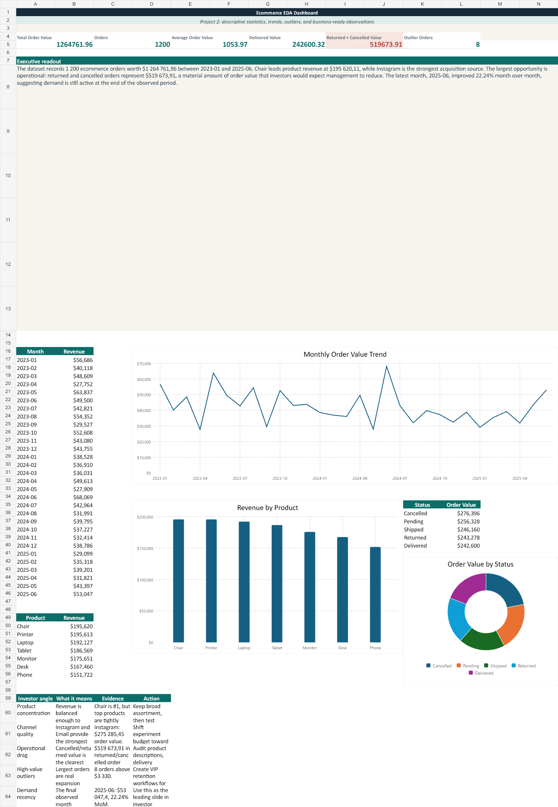
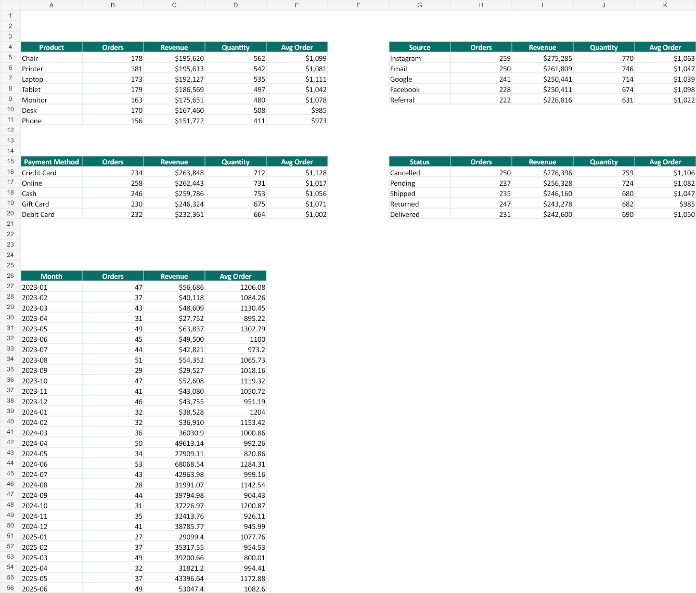
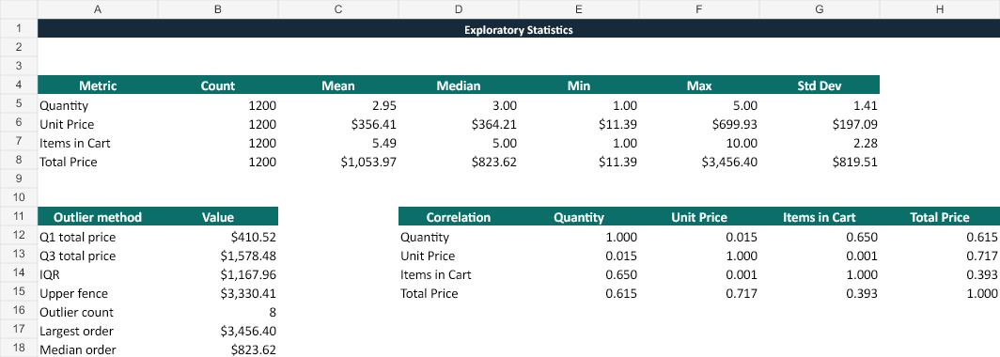
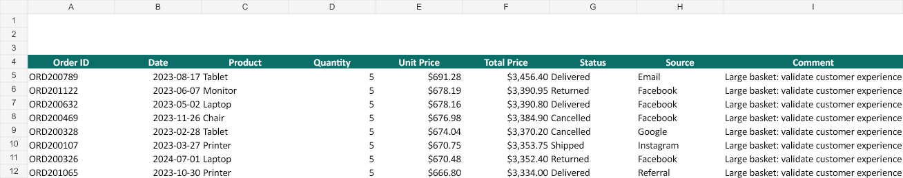

Total Order Value$1.26M
Orders Analyzed1,200
Average Order Value$1,054
Outlier Orders8
Project Summary
This project turns the raw order table into a decision-ready analytics package. The workbook contains the full EDA workflow, while the investor brief summarizes the commercial story in a short presentation format.
The strongest business message is that demand exists across multiple products and channels, while the biggest near-term opportunity is reducing returned and cancelled order value.
What Was Delivered
- Executive dashboard with KPI cards and native Excel charts
- Mean, median, count, spread, quartiles, and outlier checks
- Trends by month and segments by product/source/payment/status
- High-value outlier review table
- Investor-style PDF brief
Investor Brief Preview
Workbook Preview Images



